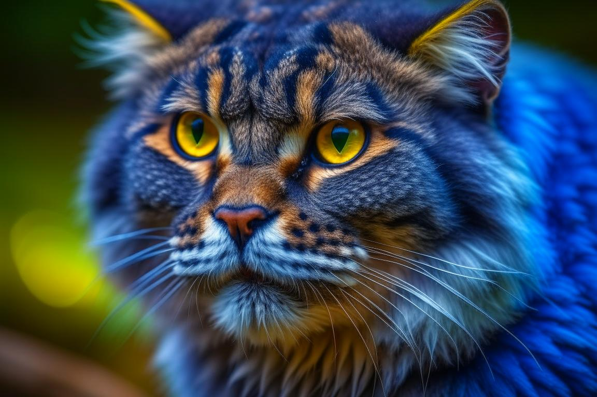

Манул

Характеристики
ПЛЮСЫ
- Уникальный внешний вид
- Приспособленность к холодному климату
- Тихий и миролюбивый характер
- Не требует сложного ухода
- Интересное поведение при игре с игрушками
МИНУСЫ
- Трудности в обучении
- Требует больше места для активности
- Не всегда приветлив к посторонним
- Могут быть проблемы с здоровьем
- Ограниченная доступность как домашнего питомца
Происхождение и история
Манул, или палеснотелый кот (Otocolobus manul), представляет собой древнего представителя семейства кошачьих,
который нашёл своё место в гористых и полупустынных регионах Азии. Его история насчитывает миллионы лет
эволюции, что делает его одним из самых древних хищников на нашей планете.
Исторически манул был внимательно изучен учёными, начиная с XIX века, но многое о его поведении остаётся загадкой
из-за его редкой встречаемости и скрытного образа жизни. Он был описан как малоизученный вид, и его точное
происхождение и эволюция до сих пор вызывают интерес у исследователей.
Сегодня манулы сталкиваются с угрозами, связанными с потерей среды обитания и браконьерством. Однако благодаря
усилиям учёных и организаций по охране природы манулы начинают привлекать больше внимания, и их история
продолжает развиваться в борьбе за сохранение этого уникального вид.
Внешний вид и особенности
- Размер и структура тела: Манул относительно небольшой хищник с коренастым и круглым
туловищем. Длина его тела составляет примерно 60-75 см, включая хвост длиной около 21-31 см. Они имеют
короткие и крепкие лапы.
- Морда и уши: Особенно заметной чертой манула является его морда с круглыми глазами,
обрамленными белым кольцом. Уши манула относительно маленькие и округлые, с обильной шерстью на кончиках,
что помогает им сохранять тепло в холодных климатических условиях.
- Шерсть: Манулы имеют плотную и мягкую шерсть, которая адаптирована для жизни в холодных и
засушливых регионах. Их окрас варьируется от серого до коричнево-красного с тёмными пятнами и полосами, что
позволяет им хорошо маскироваться среди камней и земли.
- Пищевые привычки: Основной диетой манулов являются мелкие грызуны, птицы и насекомые. Они
охотятся ночью, используя свой незаметный облик и крайне тихий подход.
